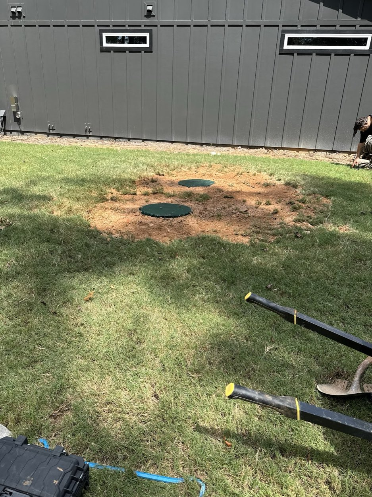
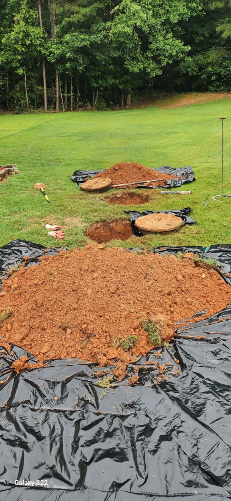
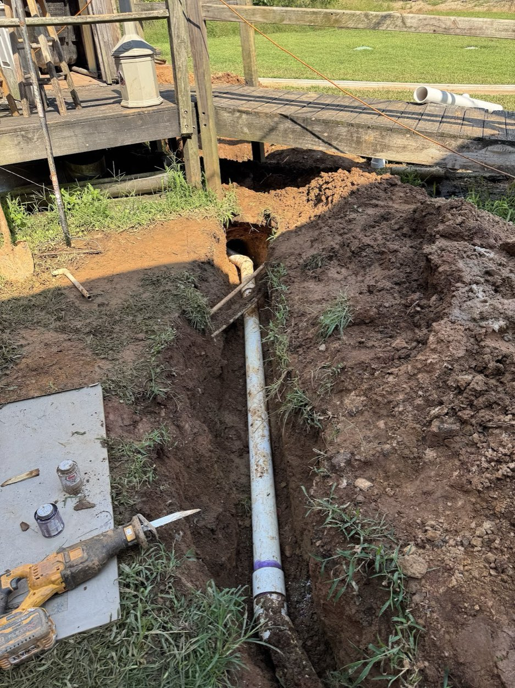
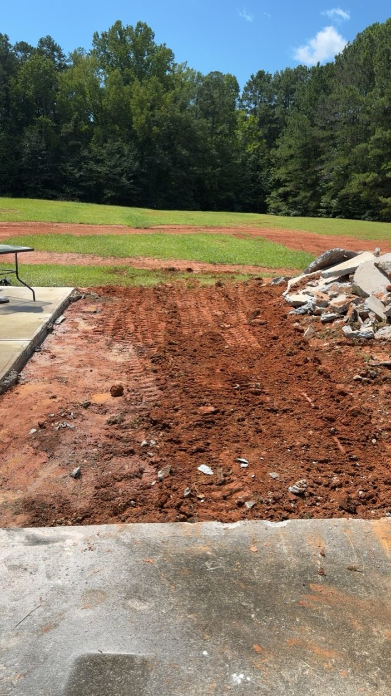

Your number onefor all yournumber 2 issues.
Serving Paulding, Cobb, Douglas, Carroll, Polk & Haralson counties.
From new riser installation to routine septic pumping, clean-out and blockage removal to inlet pipe repair: quality work for an affordable price.

No. 01The approach
Septic work, explained.
Our experienced team will take the time to answer all your questions and keep you educated about your septic system.
Stan the Septic Man, LLC is located in Dallas, Georgia and serves all the surrounding counties. Routine pumping, clean-outs, blockages, risers and inlet pipes are everyday work, and so are the calls that can't wait.
Emergency after-hours service is available, including holidays.
No. 02Services
Everything from the lid to the line.
- 01
Septic pumping & clean-out
Routine pumping and a full clean-out of the tank.
- 02
Blockage removal
Backed-up drains and clogged lines cleared out.
- 03
Riser installation
New risers so the tank lid sits at ground level.
- 04
Inlet pipe & septic repair
Inlet pipe repair and general septic repairs.
- 05
Septic inspection
A look at the tank and system, explained as we go.
- 06
Septic system installation
New septic systems put in the ground.
- 07
Plumbing pipe repair
Outdoor plumbing and pipe repair on the line to the tank.
No. 03From the job file
Red Georgia clay, real jobs.





No. 04 · What customers wrote on Google
So many septic companies just suck out the water but don't actually clean the crust and sludge out of the tank. If you want your septic tank cleaned properly, hire this company to do the job.
Ellen G. · Google review
I called them at 7am they were at my house in less than an hour. They were very knowledgeable and explained everything so we understood the issues we were having.Melissa B.
Upfront and honest about what needed to be done without being pushy on doing extra services for things that can wait.Kalen N.
Stan showed up on time, he identifies the problem and comes up with the best solutions.Dave A.
Quoted from reviews on the Stan the Septic Man Google profile, lightly shortened.
No. 05Service area
Home base: Dallas, GA.
Located in Dallas, in Paulding County, and serving all the surrounding counties.
- Paulding Home county
- Cobb County
- Douglas County
- Carroll County
- Polk County
- Haralson County
No. 06Questions
Good to know.
Do you take calls after hours?
Yes. Emergency after-hours service is available, including holidays. The Google listing shows the line open 24 hours, 7 days a week. Call 470-437-1272.
Which areas do you serve?
Stan the Septic Man is located in Dallas, GA and serves the surrounding counties: Paulding, Cobb, Douglas, Carroll, Polk and Haralson.
What is a septic riser?
A riser is a short shaft that brings the septic tank lid up to ground level. With risers in place the tank can be found and opened for pumping without digging up the yard every time.
Can you do more than pumping?
Yes. Besides routine pumping and clean-outs, the work includes blockage removal, inlet pipe repair, septic repair, riser installation, septic inspections, new septic system installation and plumbing pipe repair.
No. 07 · Contact
Backed up? Call Stan.
470-437-1272- Open 24 hours, 7 days a week
Emergency after-hours service, holidays included - Located in Dallas, GA · Paulding, Cobb, Douglas, Carroll, Polk & Haralson counties
- Reviews & photos on Google